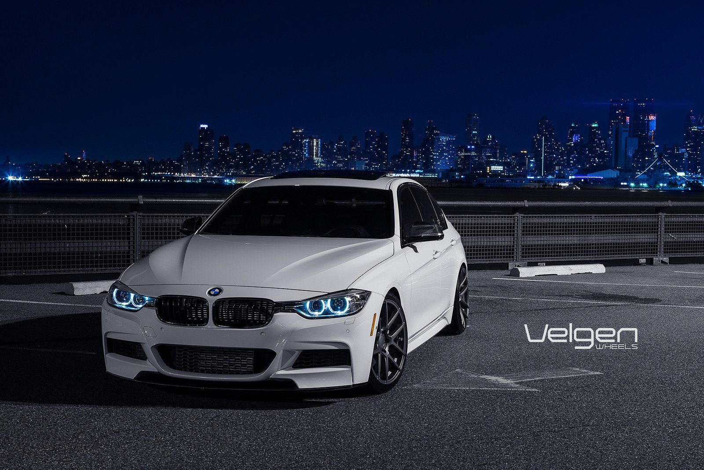

The F30 3 Series is the modern evolution of BMW’s classic sports sedan formula. This is where modern tech starts taking over. Digital displays, smoother rides, turbocharged efficiency. It’s not as raw, but it’s fast without trying and perfect for daily use. Power figures vary, but most sit around 181–255 hp stock. Reliable, clean, and still very tunable. The 340i is the performance-oriented version of the F30 3 Series. It comes with a turbocharged inline-six engine that delivers strong power and torque. Stock power is around 240 kW (322 hp), making it a blast to drive. It balances everyday usability with sporty performance, making it a great all-rounder. The M340i is one of those cars that doesn’t scream “supercar,” but will absolutely embarrass people at the robot. Straight-six turbo power, refined aggression. This is the point where “daily driver” starts feeling like a flex.